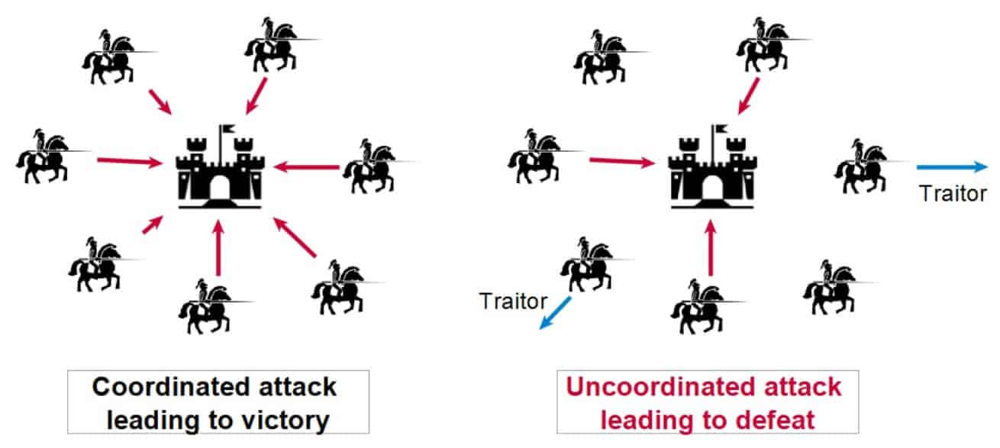

Blockchain: Byzantine Generals Problem

In game theory, the Byzantine Generals Problem is a fundamental dilemma illustrating the challenges of achieving consensus in a distributed network. The problem is named after a scenario where several generals of the Byzantine army must coordinate their attack strategy. These generals face two significant hurdles:
-
Communication Over Unreliable Channels: The generals can only communicate by sending messages, which might get lost or tampered with.
-
Potential Traitors: Some generals might be traitors who could send misleading information to prevent the loyal generals from reaching a consensus.
The objective is for the loyal generals to agree on a single strategy (e.g., attack or retreat) to ensure the army’s success. If the loyal generals cannot reach consensus, their coordinated efforts will fail. The challenge lies in devising an algorithm that ensures all loyal generals agree on the same plan, despite the presence of traitors and unreliable communication.
How Blockchain Solves the Byzantine Generals Problem
Blockchain technology, particularly through its consensus mechanisms, provides a robust solution to the Byzantine Generals Problem. Here’s how:
-
Decentralization: In a blockchain network, control is distributed across multiple nodes, removing the need for a central authority. This decentralization ensures that no single point of failure can compromise the system, making it resilient to attacks and faults.
-
Consensus Algorithms: Blockchains use consensus algorithms, such as Proof of Work (PoW) and Proof of Stake (PoS), to achieve agreement among distributed nodes. These algorithms are designed to handle the presence of malicious actors and ensure that honest nodes can reach consensus.
-
Proof of Work (PoW): Nodes (miners) compete to solve cryptographic puzzles. The first to solve the puzzle adds a new block to the chain. The majority’s computational power ensures the integrity of the blockchain, as altering past blocks would require immense computational resources, making it practically infeasible.
-
Proof of Stake (PoS): Validators are chosen to propose and validate new blocks based on the number of tokens they hold and are willing to “stake” as collateral. This mechanism economically incentivizes honest behavior, as malicious actions would result in the loss of staked tokens.
-
-
Immutability and Transparency: Each block in the blockchain contains a cryptographic hash of the previous block, forming a secure and immutable chain of records. This structure ensures that any attempt to alter a block would be immediately noticeable, as it would invalidate the subsequent blocks. The transparency of the blockchain allows all participants to verify the validity of transactions and the integrity of the data.
-
Fault Tolerance: Blockchain networks are designed to tolerate faults and attacks. Even if some nodes act maliciously or fail, the network can still function correctly as long as a majority of nodes remain honest. This property is crucial for solving the Byzantine Generals Problem, where some participants may act deceitfully.
Practical Implications
Blockchain’s solution to the Byzantine Generals Problem has profound implications for various industries:
- Cryptocurrencies: Bitcoin, Ethereum, and other cryptocurrencies rely on blockchain to ensure secure, transparent, and decentralized transactions without needing a central authority.
- Supply Chain Management: Blockchain enables transparent and tamper-proof tracking of goods, ensuring authenticity and reducing fraud.
- Voting Systems: Blockchain can provide secure and transparent voting mechanisms, reducing the risk of tampering and increasing trust in electoral processes.
- Smart Contracts: These self-executing contracts run on blockchain, ensuring that agreements are automatically enforced when conditions are met, reducing the need for intermediaries.
Conclusion
The Byzantine Generals Problem underscores the complexity of achieving consensus in a distributed network, especially in the presence of unreliable communication and malicious actors. Blockchain technology, through its decentralized structure, consensus algorithms, and fault tolerance, offers a powerful solution to this problem. As blockchain continues to evolve, its ability to ensure secure, transparent, and reliable consensus will drive innovation across various sectors, transforming how we manage and trust distributed systems.